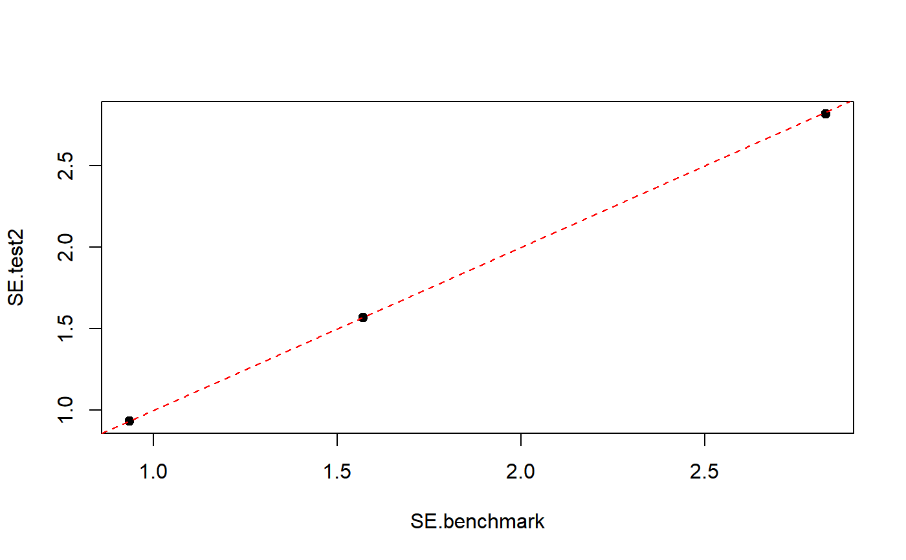

ext.calibrated2.RdEnables ReGenesees to provide approximately correct variance estimates of (functions of) calibration estimators, even if the survey weights have not been calibrated by ReGenesees.
ext.calibrated2(data, ids, strata = NULL, fpc = NULL, self.rep.str = NULL, check.data = TRUE, weights.cal, calmodel, partition = FALSE, sigma2 = NULL)
| data | The same as in function |
|---|---|
| ids | The same as in function |
| strata | The same as in function |
| fpc | The same as in function |
| self.rep.str | The same as in function |
| check.data | The same as in function |
| weights.cal | Formula identifying the externally calibrated weights. |
| calmodel | The same as in function |
| partition | The same as in function |
| sigma2 | The same as in function |
Function ext.calibrated2 is an approximate version of function ext.calibrated. The key difference is that ext.calibrated2 does not require the user to specify the base weights that underwent external calibration. This piece of information is usually unavailable to users working with publicly disseminated survey microdata, where only the final calibrated weights are reported.
The price to pay for this convenience is that, when using ext.calibrated2, sampling variance estimates are no longer exactly equal to those that could be computed by the data producer, unlike what happens with ext.calibrated.
If ext.calibrated2 is used, the obtained sampling variance estimates will be approximately correct, with an error that goes to zero in the large sample limit, and can thus be considered negligible for large-scale surveys.
An object of class cal.analytic, storing the original survey data plus all the sampling design and calibration metadata needed for proper variance estimation.
Just like ReGenesees's base functions e.svydesign and e.calibrate, ext.calibrated2 too wraps a local copy of data inside its return value. As usual, this copy is stored inside the variables slot of the output list. As usual, again, the calibrated weights are accessible by using the weights function.
ext.calibrated the gold standard function to make ReGenesees digest externally calibrated weights, e.svydesign to bind survey data and sampling design metadata, and e.calibrate for calibrating survey weights within ReGenesees.
################################################################################# # Set the stage by re-executing the ext.calibrated example (for more details on # # the steps below, please read ?ext.calibrated) # ################################################################################# data(sbs) sbsdes <- e.svydesign(data= sbs, ids= ~id, strata= ~strata, weights= ~weight, fpc= ~fpc) pop <- pop.template(data= sbsdes, calmodel= ~y:nace.macro + emp.cl + emp.num - 1, partition= ~dom3) pop <- fill.template(universe= sbs.frame, template= pop)#> #> # Coherence check between 'universe' and 'template': OK #>sbscal <- e.calibrate(design= sbsdes, df.population= pop, calfun= "logit", bounds= c(0.8, 1.3), sigma2= ~ emp.num) benchmark <- svystatR(design= sbscal, num= ~va.imp2, den= ~emp.num, by= ~region) w <- weights(sbscal) sbs.ext <- data.frame(sbs, w.ext = w) sbscal.ext <- ext.calibrated(data= sbs.ext, ids= ~id, strata= ~strata, weights= ~weight, fpc = ~fpc, weights.cal= ~w.ext, calmodel= ~y:nace.macro + emp.cl + emp.num - 1, partition= ~dom3, sigma2= ~emp.num) test <- svystatR(design= sbscal.ext, num= ~va.imp2, den= ~emp.num, by= ~region) ###################################################################################### # Let ReGenesees digest the 'externally' calibrated weights through ext.calibrated2 # # # # NOTE: By using ext.calibrated2 (instead of ext.calibrated) you no longer need the # # *initial weights*! # ###################################################################################### sbscal.ext2 <- ext.calibrated2(data= sbs.ext, ids= ~id, strata= ~strata, fpc = ~fpc, weights.cal= ~w.ext, calmodel= ~y:nace.macro + emp.cl + emp.num - 1, partition= ~dom3, sigma2= ~emp.num) ##################################################################################### # Now, re-compute benchmark estimates and errors (average value added per employee # # by region) for testing purposes # ##################################################################################### test2 <- svystatR(design= sbscal.ext2, num= ~va.imp2, den= ~emp.num, by= ~region) test2#> region va.imp2/emp.num SE.va.imp2/emp.num #> North North 56.51349 0.9341064 #> Center Center 44.99534 1.5661747 #> South South 65.85808 2.8176734################################################################################### # Compare benchmark estimates and errors (derived from the ordinary, "internally" # # calibrated object) with those derived from the return objects of ext.calibrated # # and ext.calibrated2 # ################################################################################### # e.calibrate (the gold standard) benchmark#> region va.imp2/emp.num SE.va.imp2/emp.num #> North North 56.51349 0.9344696 #> Center Center 44.99534 1.5700976 #> South South 65.85808 2.8296036# ext.calibrated (guaranteed to exactly reproduce the gold standard) test#> region va.imp2/emp.num SE.va.imp2/emp.num #> North North 56.51349 0.9344696 #> Center Center 44.99534 1.5700976 #> South South 65.85808 2.8296036# ext.calibrated2 (asymptotically equivalent to the gold standard in the large sample # limit) test2#> region va.imp2/emp.num SE.va.imp2/emp.num #> North North 56.51349 0.9341064 #> Center Center 44.99534 1.5661747 #> South South 65.85808 2.8176734# As expected 'test' precisely reproduces 'benchmark', whereas the SEs from 'test2' # are different but still provide a *very good approximation* of the gold standard SEs! # Visually compare 'test2' SEs with 'benchmark' SEs SE.benchmark <- unlist(SE(benchmark)) SE.test2 <- unlist(SE(test2)) plot(SE.benchmark, SE.test2, pch = 19)